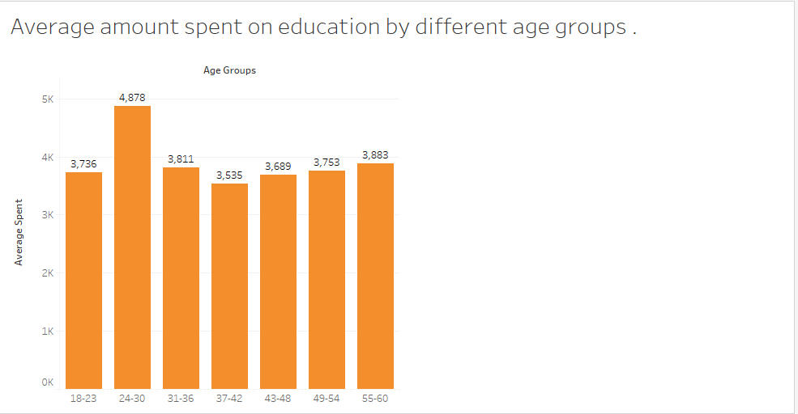

CLICK AND DRAG THE MAP TO MOVE AROUND. Tooltips provide extra detail of each building.
This is a visualization of polygonal data from the Buildings.csv file related to the apartments contained with each building. Non-apartment buildings are excluded and
the average monthly cost of rental units for each building is darker green as rent price increases. There does not appear to be any pattern of high rent vs. low rent
areas in town. Conversely, high and low average rental units seem to be evenly distributed throughout the town. - Justin
This scatterplot shows the relationship between monthly rent and monthly income for each participant along with joviality and children.
Red and blue are unhappy and happy respectively. From this visualization there is an obvious pattern that emerges where those who are paying the least
in rent are unhappy and those who are paying the most are happy. You can also see that the highest paid participants are generally unhappy. There does
not seem to be any pattern revealed among those who have children. - Justin
From this box plot we can see that the median spent on food yearly is $3,074, which is significantly lower than the average spent by Americans in 2020
($4,942) according to the Bureau of Labor Statistics. We can see that the upper quartile and whisker fall more in line with the American average. - Chris
From this line chart visualization you can see the averages of weekly extra budgets for education levels: Bachelors, Graduates,
High School or College, and low. At the graduate level, it is expected to see the graduate group to have more extra
spending whilst the low and high school or College are far less. There are some months, for example, December where income
drops due to possible holiday spending, however, overall the data shows normal results - Andrew

In the graph we can see that people between age 24-30 are spending the most on education. One thing that is interesting is that ages 55-60
are second most paying age group. - Gaganpreet

In the pie chart we can see that there is not a big difference between the age groups paying for education. Age group 55-60 was expected to
have a lower percentage but that was not the case. - Gaganpreet
From the visualization you can see that restaurants in Midtown have the most number of patrons visiting them.
While the East and West part of town have slightly less people they also seem to be pretty close to each other in total
visitations every month. - Chris
This calendar visualization displays the amount of people going into Pubsthroughout the start of March 2022 to May 2023.
With the filter system, the user can pick the month and play the animation displaying the amount of people each day of hte week
During the week, more people tend to go to the pubs during the weekends and it has remained consistent throughout
the year. - Andrew
A line graph was created showing the hourly occupancy count over a day for each pub for the given recorded time period in the data set.
As expected, we could see that the initial hours of the day for all the pubs have low occupancy during the day time and a vast increase over
the course of the night; especially from the 16th to the 18th hour. The worst hit pubs are pubs 444 and 892 which have the lowest occupancy
count throughout the day while pubs 1342 and 1344 have lots of customers rolling in. - Vanessa
The animation shows the number of customers declined rapidly for all pubs after March 2022. The top two pubs for revenue of each customer are
1342 and 1344. They have the highest revenue as they have a larger number of customers than the rest. The bottom two pubs for revenue are 444
and 443.
All in all, there seems to be a correlation of hourly occupancy count over 24 hours to the revenue as the top two and lowest two pubs fall nearly
in the same ranking placements in both visualizations. - Vanessa
Summary
Discoveries & Insights drawn from the visualizations:
From the visualizations we created we've found that the cost of living in the city is lower than the national average when looking at rental costs, educational spending, and yearly spending on food. We've also discovered from the monthly extra budget visualization that the average disposable income has been increasing steadily over time.
Discoveries & Insights made from creating the visualizations:
Interactive graphs are generally more engaging and provide more options for customized viewing, thus are able to uncover more underlying insights to the audience than static graphs.